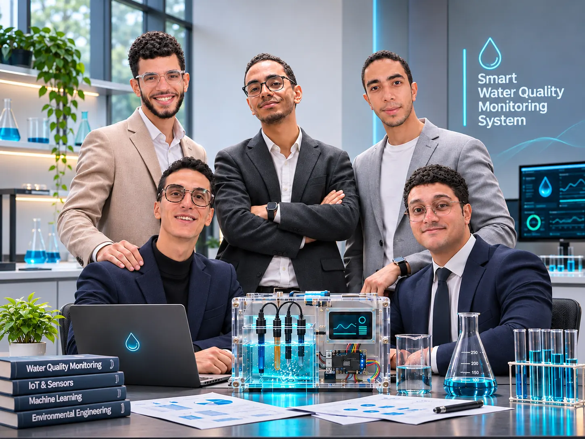
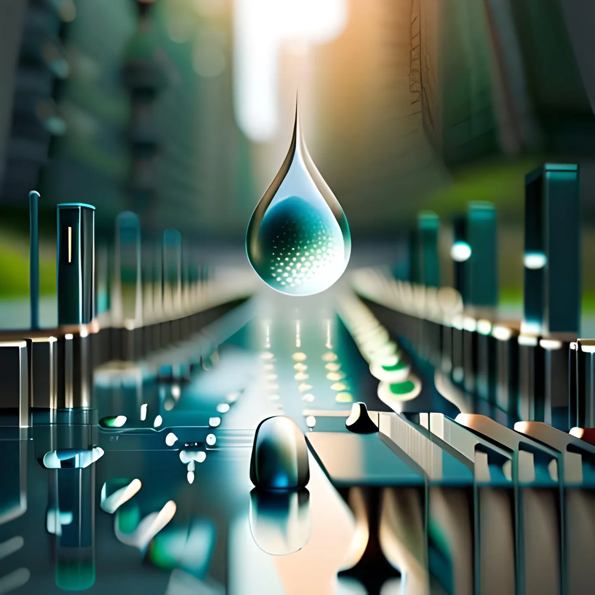

What can a dataset tell us about water? Follow the evidence from 3,276 samples through exploratory analysis, preprocessing and a real machine-learning experiment.
WATER RESEARCH
Model accuracy is an experimental result, not evidence of drinking-water safety.
Water tells a story.
But the story is complex.
Water quality cannot be reduced to a single reading. Laboratory analyses measure chemical and physical indicators, while affordable sensors capture only a subset.
This project explores a public labeled dataset with nine physicochemical measurements, and investigates how machine learning can classify those dataset labels—without claiming to replace laboratory testing.
Explore the research question ↗Not just a report.
A path through the evidence.
Explore in sequence, or jump directly to the part you want to understand. Every chapter leads to real data, documentation or an interactive experiment.
The Research
Problem, architecture, scope and the original four-section academic manuscript.
READ THE PAPERExplore the Data
Class balance, missing observations, distributions, outliers and Pearson correlations.
INTERACTIVE EDAInside the Method
See stratified splitting, median imputation and standard scaling in action.
PREPROCESSING LABTest the Model
Enter nine measurements and explore the actual, carefully qualified Random Forest output.
PREDICTION LABGo 3D
Rotate an educational water sample and inspect the optional sensor architecture.
3D EXPLORERMeet the Team
Five contributors across research writing, exploratory analysis and preprocessing.
THE RESEARCHERSNine indicators.
One prediction problem.
The dataset includes pH, Hardness, Solids, Chloramines, Sulfate, Conductivity, Organic Carbon, Trihalomethanes and Turbidity. Their units, measurement methods and distributions matter.
pH
Acidity or alkalinity of water. A calibrated pH electrode can measure this value.
Direct probe · calibration requiredFrom raw values
to an evaluated model.
We trained and compared five classifiers after leakage-safe preprocessing. The selected Random Forest was evaluated on a separate test partition.
Evidence before confidence. Balanced accuracy was 59.73%, and 44 of 400 class-0 test samples were labeled class 1. This system must not be used to decide whether actual water is safe to drink.
Every prediction
has a method.
Move through the four stages of our real reproducible workflow. The explanation updates without changing the trained model.
Try the preprocessing walkthrough ↗Preserve the held-out test.
The data is divided into 2,620 training and 656 test records, stratified by the original target labels.
From a water sample
to a signal.
Explore a conceptual sensor-equipped ESP32 system. Rotate the modules, inspect each component and separate the layers. This is an interactive engineering explanation—not an assembled device or a live measurement stream.

CONCEPTUAL TEAM PORTRAIT · AI-GENERATED HARDWARE SCENARIO · NOT AN ACTUAL BUILT DEVICEFive contributors.
One shared experiment.
Meet the people who explored the dataset, prepared the pipeline and wrote the research. The photo visualizes a possible completed hardware prototype; no physical device is claimed to have been built.
Explore the team ↗
The next layer
is yours to discover.
Inspect the 3D water sample, explore the optional ESP32 prototype, or present the full research journey.